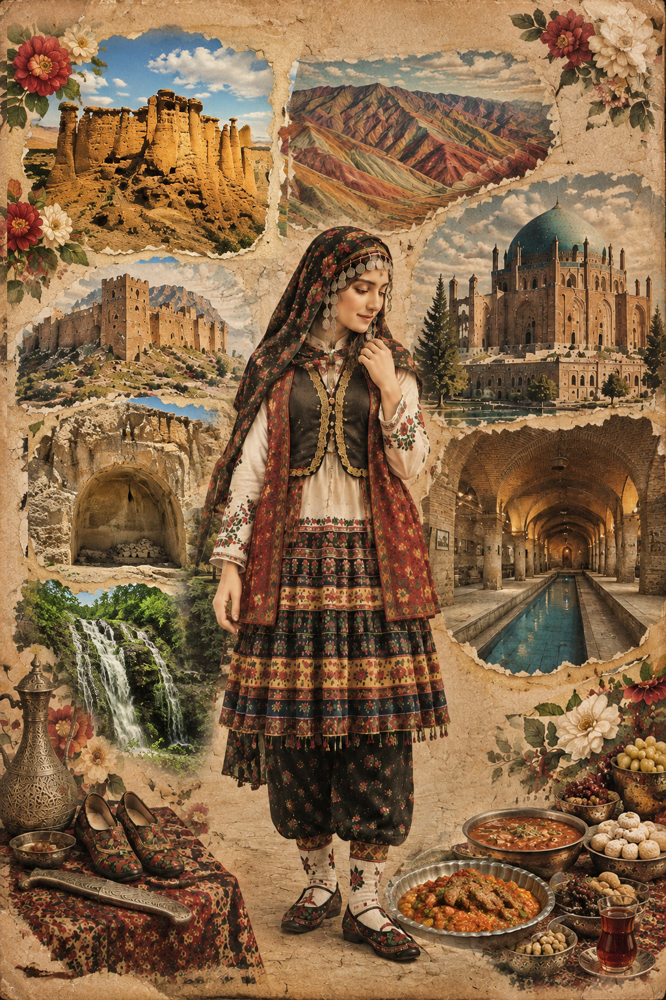

زنجان Zanjan
درخشش نقره، شکوه نقشهای ماندگار The Shine of Silver, the Beauty of Timeless Patterns

آشنایی با سرزمین About the Region
زنجان در شمال غرب ایران قرار دارد و بهواسطه پیشینه تاریخی، طبیعت کوهستانی، معماری ارزشمند و هنرهای دستی شناخته میشود. این منطقه بخشی از حوزه فرهنگی آذربایجان است و زبان ترکی آذری در کنار فارسی در زندگی فرهنگی مردم جایگاه دارد. فلزکاری، چاقوسازی، ملیلهکاری و فرشبافی از هنرهای شاخص زنجان هستند.
Zanjan is located in northwestern Iran and is known for its history, mountainous landscapes, architecture and handicrafts. Azerbaijani Turkish is widely spoken alongside Persian. Metalwork, knife-making, filigree and carpet weaving are among the region's notable crafts.
پوشش زنان؛ اصالت در رنگ و نقش Women's Clothing: Tradition in Color and Pattern
پوشاک سنتی زنان زنجان در گذشته با توجه به محل زندگی، شرایط آبوهوایی و شیوه زندگی خانوادهها شکل گرفته است. پیراهنهای بلند، دامنهای چیندار، جلیقه و پوششهای سنتی سر از اجزای لباس زنان در برخی نواحی این منطقه بودهاند.
رنگهای متنوع، پارچههای نقشدار و تزئینات دوختی در لباسهای محلی جلوه داشتهاند. در نواحی روستایی، پوشش سنتی گاهی با جزئیات و شیوههایی متفاوت از پوشاک شهری همراه بوده است. با این حال، پوشش زنان زنجان یک شکل ثابت و یکسان نداشته و در طول زمان تغییر کرده است.
Traditional women's clothing in Zanjan developed in response to local lifestyles, climate and family customs. Long dresses, gathered skirts, vests and traditional head coverings were worn in some parts of the region. Colors, patterned fabrics and decorative stitching added distinctive details. Clothing varied between rural and urban areas and changed over time.
اجزای پوشش محلی Elements of Traditional Clothing
پیراهن بلند Long Dress
پیراهنهای بلند از اجزای پوشاک سنتی زنان در بخشهایی از منطقه بودهاند.
Long dresses were part of traditional women's clothing in parts of the region.
دامن چیندار Gathered Skirt
دامنهای چیندار و پرحجم در برخی نمونههای پوشاک محلی دیده میشوند.
Gathered and full skirts appear in some examples of local clothing.
جلیقه Vest
جلیقههای پارچهای روی پیراهن پوشیده میشدند و گاهی تزئینات دوختی داشتند.
Fabric vests were worn over dresses and sometimes featured decorative stitching.
روسری و سربند Scarf and Headwear
پوشش سر با رنگها و شیوههای گوناگون، تکمیلکننده لباس محلی بوده است.
Headscarves in different colors and styles completed traditional outfits.
شهرها و نواحی فرهنگی Cities and Cultural Areas
زنجان
مرکز استان و کانون تاریخی هنرهای فلزی، بازار سنتی و معماری ارزشمند.
The provincial capital, known for metal crafts, its traditional bazaar and historic architecture.
ابهر
شهری تاریخی با آثار معماری و پیشینه فرهنگی در مسیر ارتباطی فلات ایران.
A historic city with architectural heritage and a long cultural history.
قیدار
از شهرهای مهم منطقه با جاذبههای مذهبی و طبیعت پیرامونی.
An important town with religious attractions and surrounding landscapes.
ماهنشان
منطقهای با چشماندازهای کوهستانی و پدیدههای طبیعی خاص.
An area known for mountain scenery and distinctive natural formations.
سلطانیه
شهری تاریخی با یکی از برجستهترین بناهای معماری ایران.
A historic town with one of Iran's most remarkable architectural monuments.
طارم
ناحیهای با طبیعت متنوع، باغها و محصولات کشاورزی شناختهشده.
A region with diverse landscapes, orchards and well-known agricultural products.
جاذبههای تاریخی و طبیعی Historical and Natural Attractions
گنبد سلطانیه
شاهکار معماری دوره ایلخانی و یکی از آثار ثبتشده در میراث جهانی یونسکو.
A masterpiece of Ilkhanid architecture and a UNESCO World Heritage Site.
غار کتلهخور
غاری آهکی با تالارها و قندیلهای طبیعی در نزدیکی گرماب.
A limestone cave with natural chambers and formations near Garmab.
موزه رختشویخانه
بنایی تاریخی در شهر زنجان که برای شستوشوی عمومی لباس ساخته شده بود.
A historic public laundry building in Zanjan, now functioning as a museum.
بازار تاریخی زنجان
بازاری گسترده با راستهها، سراها و کارگاههای سنتی و صنایعدستی.
A large historic bazaar with traditional passages, courtyards and craft workshops.
دودکش جن
پدیدهای زمینشناختی در منطقه ماهنشان با ستونهای سنگی خاص.
A geological formation in Mahneshan featuring unusual rock pillars.
دریاچه پری
دریاچهای طبیعی در منطقه ماهنشان با چشماندازهای آرام و کوهستانی.
A natural lake in Mahneshan surrounded by peaceful mountain scenery.
خوراکهای محلی Local Cuisine
جغور بغور
خوراکی شناختهشده در زنجان که با جگر و دل و قلوه و پیاز تهیه میشود.
A well-known Zanjani dish made with liver, heart, kidney and onions.
آش ترش
آشی محلی با طعم ترش و ترکیبی از حبوبات و سبزیجات.
A local sour soup made with legumes and vegetables.
ششانداز
غذایی سنتی که با مواد مختلف از جمله گردو، کشمش و پیاز تهیه میشود.
A traditional dish prepared with ingredients such as walnuts, raisins and onions.
آش بلغور
از غذاهای خانگی منطقه که با بلغور، حبوبات و سبزی تهیه میشود.
A regional home-style soup made with bulgur, legumes and herbs.
شیرینیها و سوغات Sweets and Souvenirs
نان برنجی زنجان
شیرینی سنتی بر پایه آرد برنج که در میان سوغات منطقه دیده میشود.
A traditional rice-flour sweet found among regional souvenirs.
شیرینی شستی
شیرینی محلی با شکل و شیوه تهیه ویژه که در زنجان شناخته شده است.
A local sweet with a distinctive shape and preparation method.
انگور و کشمش
از محصولات کشاورزی و سوغات نواحی مختلف استان، بهویژه طارم.
Grapes and raisins are among the agricultural products of the province, especially Tarom.
عسل و محصولات محلی
عسل و فرآوردههای کشاورزی از محصولات روستایی استان هستند.
Honey and agricultural products are among the province's rural specialties.
صنایعدستی و هنرهای سنتی Handicrafts and Traditional Arts
ملیلهکاری
هنر ظریف نقرهکاری با مفتولهای باریک که از شناختهشدهترین هنرهای زنجان است.
Delicate silver filigree made with fine wires, one of Zanjan's best-known crafts.
چاقوسازی
هنری قدیمی و شناختهشده که زنجان را به یکی از مراکز مهم ساخت چاقوی سنتی تبدیل کرده است.
An old and renowned craft that has made Zanjan an important center for traditional knife-making.
چاروقدوزی
هنر ساخت پایافزار سنتی چرمی با دوخت و تزئینات دستساز.
The traditional craft of making leather footwear with handmade stitching and decoration.
فرش و گلیمبافی
دستبافتههایی با نقشهای سنتی و رنگهای متنوع در شهرها و روستاهای استان.
Traditional carpets and flat-woven textiles with varied patterns and colors.
مسگری و فلزکاری
ساخت ظروف و اشیای فلزی از هنرهای ریشهدار بازار و کارگاههای سنتی زنجان.
Making metal vessels and objects is a longstanding craft in Zanjan's traditional workshops.
چاپ و تزئینات سنتی
هنرهای تزئینی و کارهای دستی در کنار دیگر صنایعدستی منطقه حضور دارند.
Decorative arts and handmade work complement the region's other crafts.